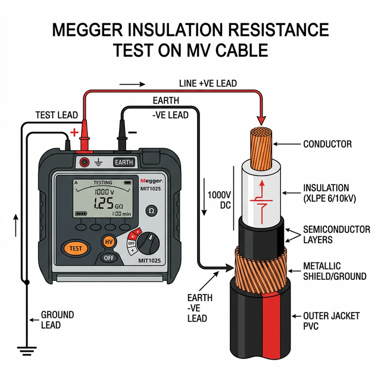

MV Cable Insulation Resistance Testing Procedure
This document outlines the standard procedure for performing an Insulation Resistance (IR) test, often referred to as a Megger test, on Medium Voltage (MV) cables to evaluate the integrity of the cable insulation.
1. Objective
To measure the insulation resistance of the MV cable to ensure it is fit for energization and to establish a baseline for future maintenance comparisons.
2. Prerequisites
-
Safety First: Ensure the cable is completely de-energized, isolated from all sources of supply, and properly grounded before commencement.
-
Equipment Verification: Verify that the Insulation Resistance Tester (Megger) is calibrated and has an output voltage rating appropriate for the cable under test (typically 5 kV or 10 kV DC for MV cables).
-
Personnel: Only qualified and trained personnel should perform this test.
-
Clearance: Establish a clear safety perimeter around the testing area and both ends of the cable.
3. Equipment Required
-
Insulation Resistance Tester (Megger) capable of generating 5000V DC or 10000V DC.
-
Approved insulating gloves and safety glasses.
-
Grounding sticks/cables.
-
Voltage detectors.
-
Clean, dry cloths and appropriate cleaning solvent for cable ends.
4. 4. Test Preparation
-
Disconnect: Disconnect the cable from all equipment at both ends (e.g., switchgear, transformers, motors).
-
Phase Separation: Ensure the phases are adequately separated from each other and from ground at both ends to prevent flashover during the test.
-
Grounding: Solidly ground all metallic shields/screens and armor of the cable.
-
Cleaning: Thoroughly clean the terminations at both ends using an approved solvent and clean cloths to remove any dirt, moisture, or tracking paths.
|
Failure to properly clean terminations can result in surface leakage currents that will give falsely low insulation resistance readings. |
5. 5. Test Procedure
The test is typically performed phase-to-ground and phase-to-phase (if individual phases are not shielded). For shielded MV cables, the primary test is phase-to-shield.

-
Connections:
-
Connect the positive (Line) lead of the Megger to the conductor of the phase under test.
-
Connect the negative (Earth) lead of the Megger to the cable shield/ground.
-
Optionally, use the Guard terminal connected to bare insulation to bypass surface leakage currents.
-
-
Initial Voltage: Ensure the tester is set to the correct test voltage (e.g., 5000V for a 15kV cable).
-
Application: Apply the test voltage.
-
Recording: Read and record the insulation resistance value at 1 minute. For Polarization Index (PI) assessment, record values at 1 minute and 10 minutes.
-
Discharge: Upon completion of the test, turn off the Megger and safely discharge the tested conductor to ground using a grounding stick. Maintain the ground connection for at least as long as the test duration (e.g., if tested for 10 minutes, ground for at least 10 minutes).
|
MV cables act like large capacitors. They can store a lethal charge. Never touch the conductor or disconnect the test leads until the cable has been fully discharged to ground. |
6. 6. Test Criteria (Example)
Acceptable insulation resistance values depend on the cable type, length, age, and temperature. Always consult the manufacturer’s data or standards like IEEE 400.1.
General rule of thumb for MV cables (e.g., 15kV): * Minimum Acceptable Value: Often specified as 1000 Megohms (1 Gigaohm) or higher for new cables, but IEEE 400.1 provides specific formulas based on cable dimensions. * Polarization Index (PI): The ratio of the 10-minute reading to the 1-minute reading. A PI > 2.0 generally indicates good insulation condition. A PI < 1.0 indicates severe degradation or moisture tracking.
|
Temperature significantly affects insulation resistance. Readings must be corrected to a base temperature (usually 20°C or 40°C) for accurate historical comparison. |
7. 7. Post-Test Actions
-
Repeat the procedure for the remaining phases.
-
Reconnect the cable to the equipment once all testing and discharging are complete and verified safe.
-
Document all test results, including the applied voltage, 1-minute and 10-minute resistance values, calculated PI, ambient temperature, humidity, and the make/model of the test instrument.